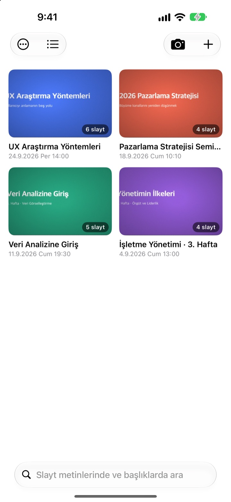
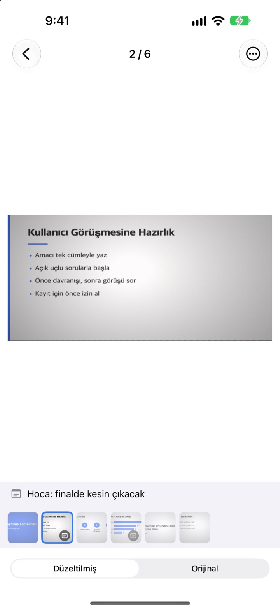
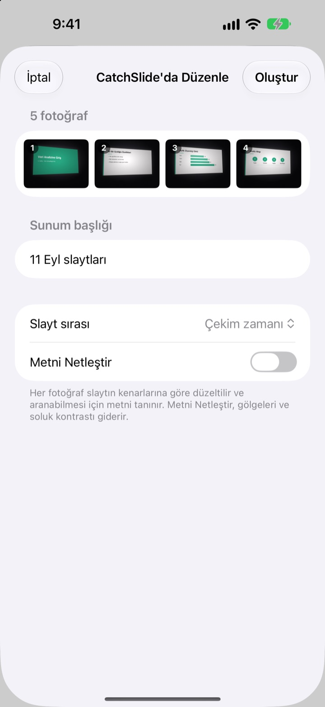
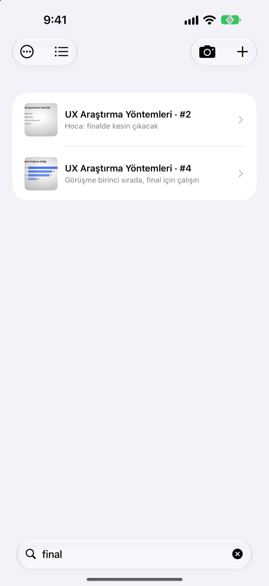

Yandan çekildi.
Karşıdan kaydedildi.
Kamera slaydın dört köşesini bulur, düzeltir ve çevresindeki her şeyi kırpar. Art arda çektiğiniz slaytlar aynı sunumda toplanır.
Tek satın alma, tüm özellikler. Abonelik yok, hesap yok.

Kendiniz düzeltin
Bu fotoğraf amfide yan taraftaki bir koltuktan eğik olarak çekildi. Yeşil çerçeve, slaydın bulunan köşelerini gösteriyor.
Ders çalışmak için galeriyi açıp slaydı bulamadığınız oldu mu?
Arka sıralardan çekilen slaytlar hep yamuk çıkar, selfie’lerle fişlerin arasında kaybolur. Sessiz bir amfide deklanşör sesi bile çekmekten vazgeçirir. CatchSlide sessizce çeker, her slaydı düzeltir ve sunumlara göre bir arada tutar.
Çektiğiniz anda düz
Kamera slaydın dört köşesini canlı olarak takip eder ve yakaladığında yeşile döner. Eğik çekilse bile slayt karşıdan çekilmiş gibi düzeltilir, arka plan kırpılır.
Deklanşör sesi yok. Otomatik çekim açıkken her yeni slayt kendiliğinden çekilir, bulanık kareler atlanır.

Elinizdeki fotoğraflar, tek seferde
Fotoğraflar uygulamasında dersten birkaç fotoğraf seçip CatchSlide ile paylaşın. Çekildikleri sırayla düzeltilip tek bir sunum olarak kaydedilir.Metni Netleştir gölgeleri ve soluk kontrastı giderir.

Tek bir kelime yeter
CatchSlide her slayttaki metni doğrudan cihazınızda okur. Haftalar sonra bile aklınızda kalan tek kelime sizi o slayta götürür.
Slaytlara eklediğiniz notlar da aranabilir. Birkaçına final yazın, sınav konularının hepsi tek aramada karşınıza çıksın.

Üç adımda başlayın
- 1
Kamerayı açın
Listedeki kamera düğmesinden, Ana ekran widget’ından ya da kilitli ekrandan.
- 2
Slaydı kadraja alın
Köşeler yeşile dönünce deklanşöre basın ya da işi otomatik çekime bırakın.
- 3
Sunumlara göre tekrar edin
Arayın, not ekleyin ve çalışmak için PDF dışa aktarın.
Bir sunumla neler yapabilirsiniz
- Kayıt
- Çekerken ses kaydedin, sonra her slaydı çektiğiniz andan itibaren dinleyin
- Yazıya dökme
- Kaydı metne çevirir, her slaytta ne söylendiğini gösterir ve aramaya dahil eder
- Yapay zekâ özeti
- Sunumu slayt metninden ve yazıya dökülen konuşmadan özetler (Apple Intelligence destekli cihazlarda iOS 26 veya sonrası)
- Sayfa başına bir, iki ya da dört slaytlık tekrar notları
- Markdown
- Notion veya Obsidian’a hazır bir .zip
- PowerPoint
- Konuşmacı notlarında yazıya dökülmüş metinle .pptx olarak dışa aktarır
- Birleştirme
- Birkaç sunumu seçip tek sunumda birleştirin
- iCloud eşzamanlama
- Açtığınızda sunumlarınızı aynı Apple ID’yi kullanan diğer cihazlarda da görürsünüz. Varsayılan olarak kapalıdır
- Widget’lar
- Kamerayı doğrudan Ana ekrandan veya kilitli ekrandan açar
Metin tanıma, yazıya dökme ve yapay zekâ özetleri cihazınızda çalışır.
Bir kez alın, hepsi sizin
CatchSlide
- Sessiz çekim, otomatik çekim ve düzeltme
- Fotoğraflar’dan toplu içe aktarma
- Sunumlara göre slaytlar, metin ve notlarda arama
- Kayıt, yazıya dökme ve yapay zekâ özeti
- PDF, Markdown ve PowerPoint olarak dışa aktarma
- iCloud eşzamanlama ve widget’lar
Bahşiş (isteğe bağlı)
- Uygulama işinize yarıyorsa geliştiriciye küçük bir bahşiş bırakabilirsiniz
- Bahşiş hiçbir özelliği açmaz. Tüm özellikler bahşişsiz de çalışır
Bilgilerim ekranından gönderebilirsiniz.
Abonelik ya da özellik açmak için ek ödeme yok. Ülkenizdeki fiyatı App Store’da görebilirsiniz.
Sık sorulan sorular
Slaytı nasıl çekerim?
Kamerayı açıp slaydı kadraja alın. Köşeler yeşile dönünce deklanşöre basın. Otomatik çekim açıksa slayt her değiştiğinde bir sonraki kendiliğinden çekilir.
Deklanşör sesi çıkıyor mu?
Hayır. Kare doğrudan kameradan kaydedildiği için her ülkede sessizdir.
Fotoğraflarım neden tek bir sunumda toplandı?
Bir sonraki fotoğrafı öncekinden sonraki 5 dakika içinde çekerseniz aynı sunuma eklenir. Adını değiştirmek için listede başlığa dokunun, ayrı düşen sunumları Sunumları Birleştir ile birleştirin.
Daha önce çektiğim fotoğrafları ekleyebilir miyim?
Evet. Fotoğraflar uygulamasında seçip CatchSlide ile paylaşın ya da listedeki ＋ düğmesine dokunup Fotoğraflar'dan İçe Aktar’ı seçin. Çekildikleri sırayla düzeltilip tek sunum olarak kaydedilir.
Köşeler yanlış bulundu.
Slaydı açın, ⋯ menüsünden Köşeleri Ayarla’yı seçin ve dört köşeyi yerine sürükleyin. Otomatik Algıla köşeleri yeniden arar, Tüm Görsel ise fotoğrafın tamamını kullanır. Orijinal her zaman saklanır, yani istediğiniz an yeniden düzeltebilirsiniz.
Slaytlardaki metinde arama yapabilir miyim?
Listenin üstündeki arama alanına bir kelime yazın. Slayt metinleri, sunum başlıkları, notlar ve yazıya dökülen konuşmalar taranır, doğrudan ilgili slayta gidilir. Metin tanıma cihazınızda yapılır.
PDF olarak nasıl dışa aktarırım?
Sunumda paylaşma menüsünü açın, PDF Olarak Dışa Aktar’ı seçin ve sayfa başına bir, iki ya da dört slayt belirleyin. Paylaşma sayfasından Dosyalar’a kaydedebilir ya da başka bir uygulamaya gönderebilirsiniz.
Slaytların sırasını nasıl değiştirir ya da silerim?
Sunumda bir slayta basılı tutup sürükleyin. Aynı menüden tek slaytı silebilir veya paylaşabilir, Seç ile birden fazlasını birlikte silebilirsiniz.
Kayıt ve yapay zekâ özeti nasıl çalışır?
Kameranın üstündeki Kayıt’ı açın, her slayt o anın sesini saklasın. Sunum Notları içinde Yapay Zekayla Özetle slayt metninden ve yazıya dökülen konuşmadan bir özet çıkarır. Bunun için Apple Intelligence destekli bir cihazda iOS 26 veya sonrası gerekir.
Slaytlarım ve kayıtlarım nerede saklanıyor?
Cihazınızda. Yalnızca Bilgilerim’de Senkronize Et’i açarsanız kendi iCloud’unuza yüklenir, hesap gerekmez. Ayrıntılar Gizlilik Politikası’nda.
Soru, hata bildirimi ya da fikirleriniz için leeo@kakao.com adresine yazın.